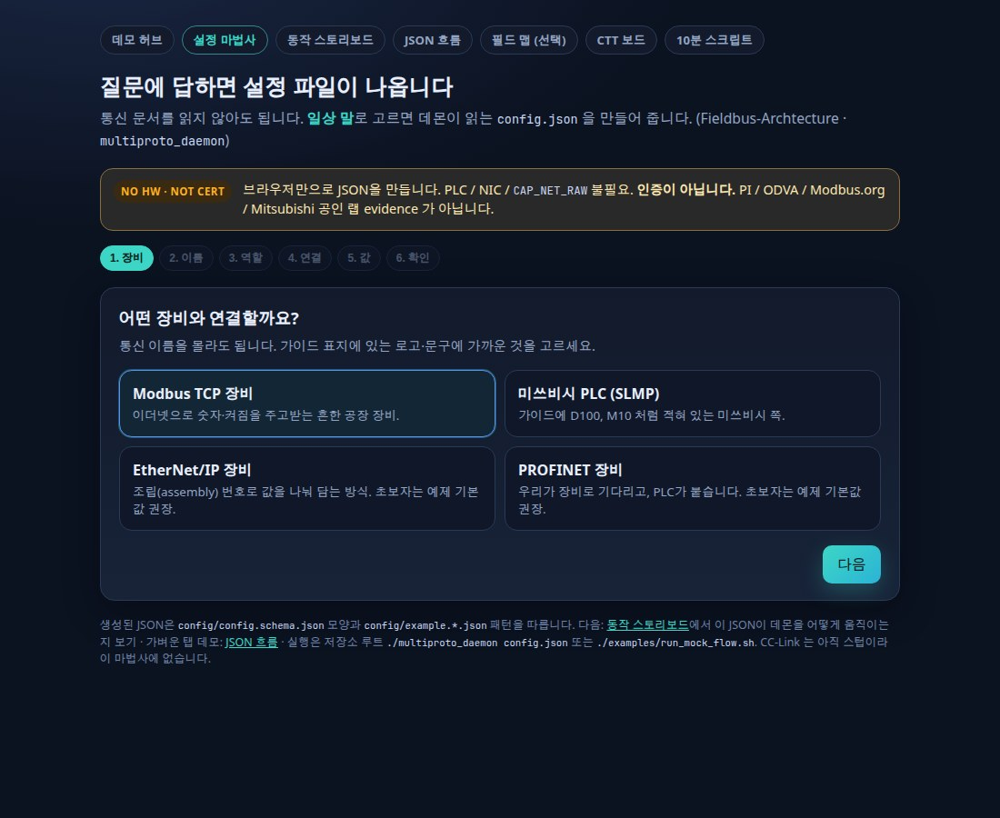
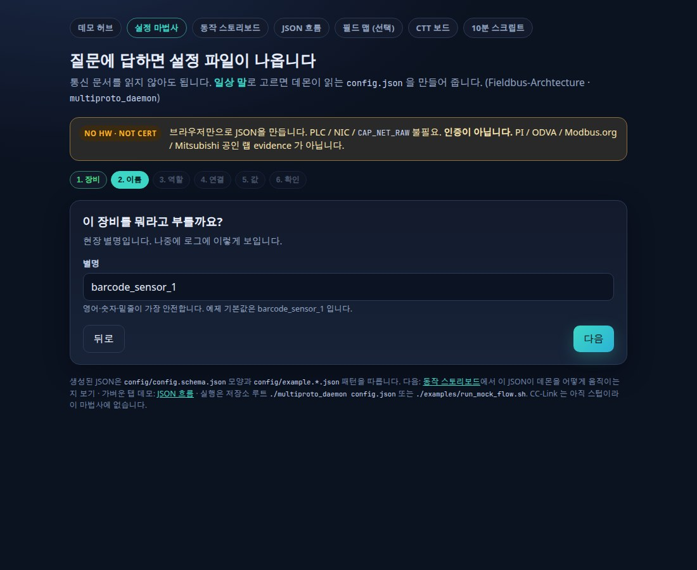
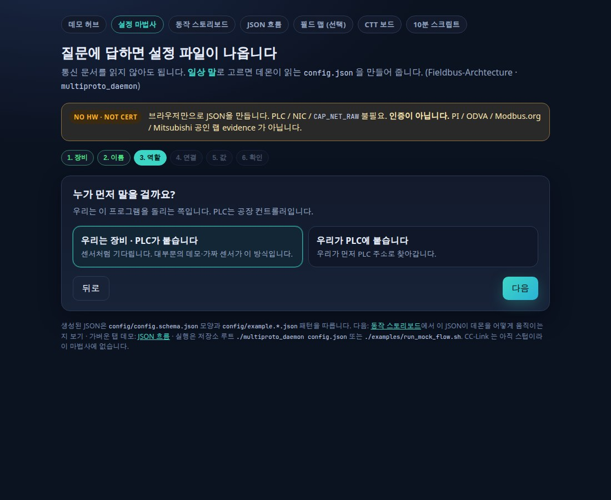
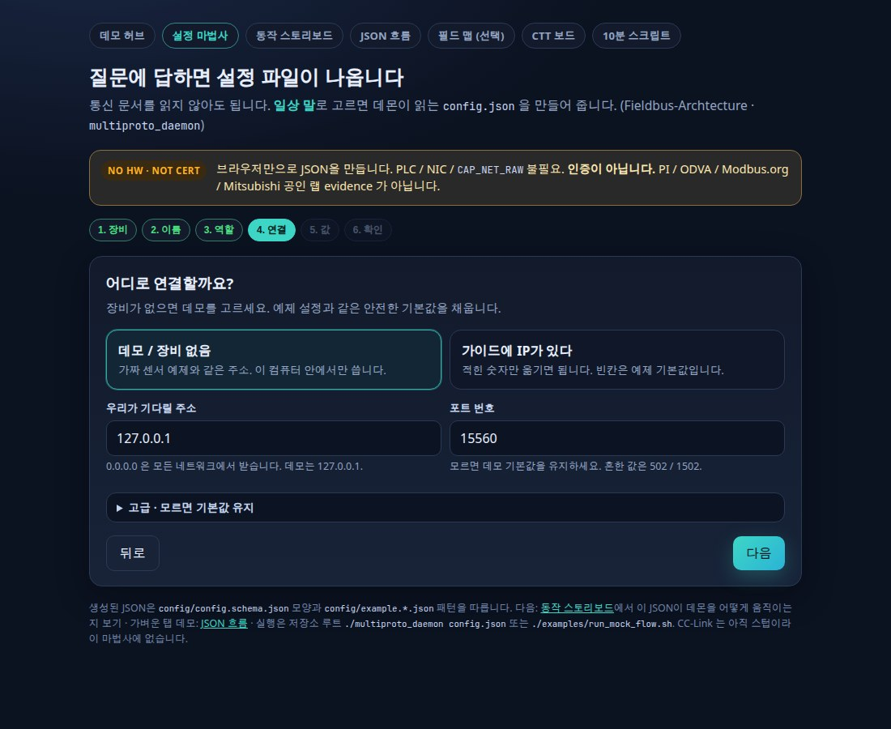
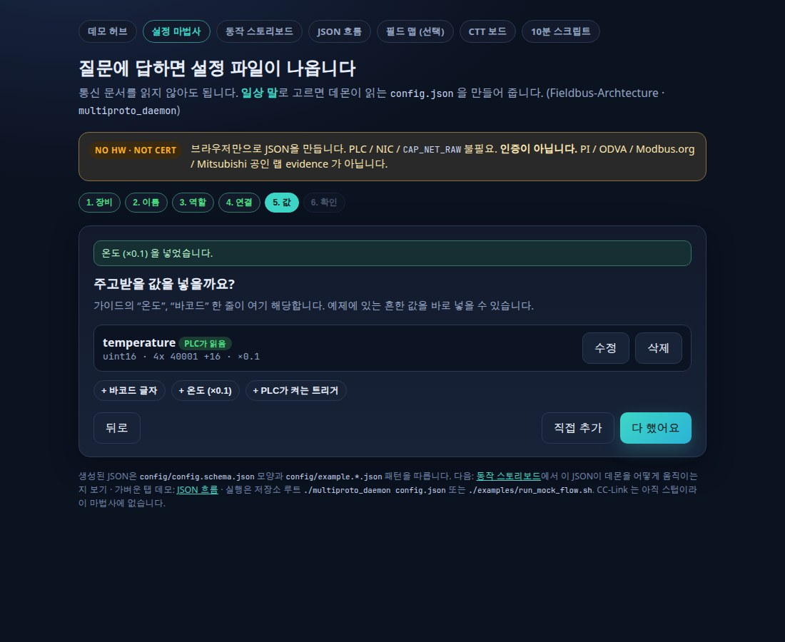
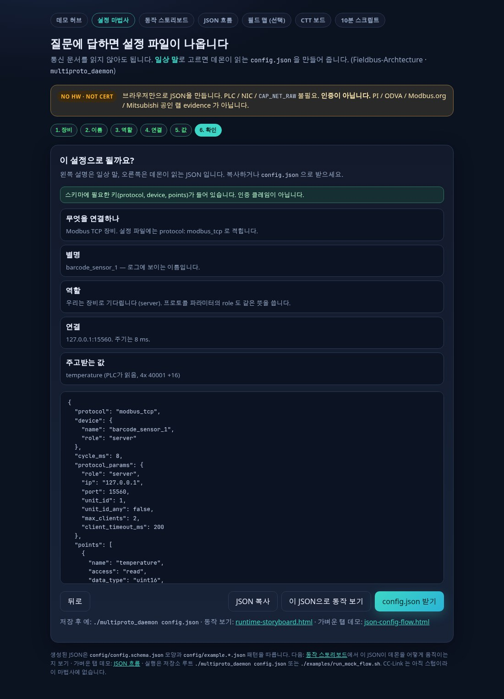

통신 문서를 읽지 않아도 됩니다. 아래는 실제
config-wizard.html
의 Modbus 입문 경로입니다.
같은 버튼을 누르면 데몬이 읽는 config.json 이 나옵니다.
저장소 루트에서 브라우저로 엽니다. 이 페이지는 스크린샷 안내일 뿐, 마법사 자체를 바꾸지 않습니다.
xdg-open docs/config-wizard.html
추천 경로 (초보자 · 장비 없음):
Modbus TCP→ 별명 기본값→ 우리는 장비→ 데모 / 장비 없음→ + 온도 (×0.1)→ config.json 받기
Modbus TCP 장비를 고르고 다음을 누릅니다. 기본값도 Modbus입니다. 통신 이름을 몰라도, 가이드 표지의 로고·문구에 가까운 것을 고르면 됩니다.

별명 기본값 barcode_sensor_1 을 그대로 두고 다음을 누릅니다.
영어·숫자·밑줄이 가장 안전합니다. 나중에 로그에 이 이름이 보입니다.

우리는 장비 · PLC가 붙습니다를 고릅니다. 센서처럼 기다리는 쪽입니다. 대부분의 데모·가짜 센서가 이 방식입니다.

데모 / 장비 없음을 고릅니다.
주소는 127.0.0.1, 포트는 15560 입니다.
가짜 센서 예제와 같은 안전한 기본값입니다. 고급 칸은 비워 두면 됩니다.

+ 온도 (×0.1)을 누른 뒤 다 했어요를 누릅니다. 가이드의 “온도” 한 줄이 여기 해당합니다. 바코드·트리거가 필요하면 같은 줄의 칩을 더 눌러도 됩니다.

왼쪽은 일상 말, 아래는 데몬이 읽는 JSON 입니다. JSON 복사, config.json 받기, 또는 이 JSON으로 동작 보기로 스토리보드에 넘길 수 있습니다.

마법사에서 받은 JSON이 데몬을 어떻게 움직이는지, 가벼운 탭 데모로 이어서 볼 수 있습니다.